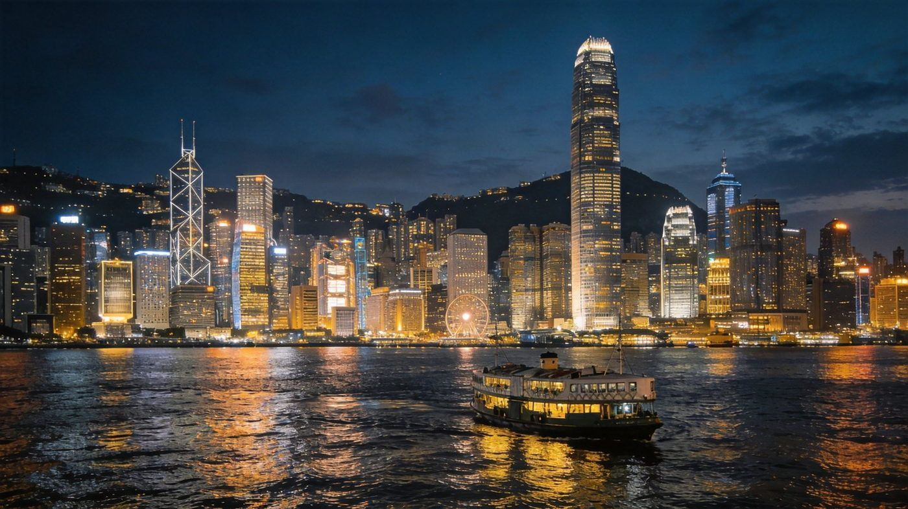
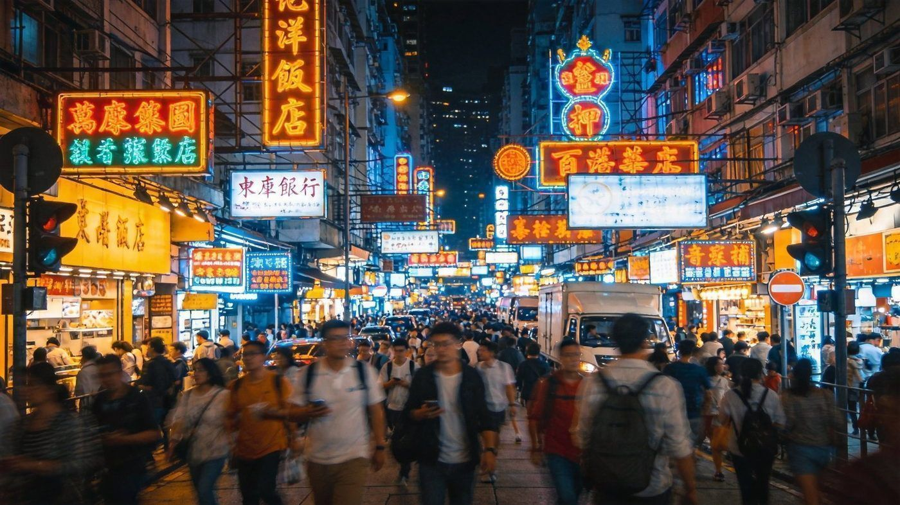
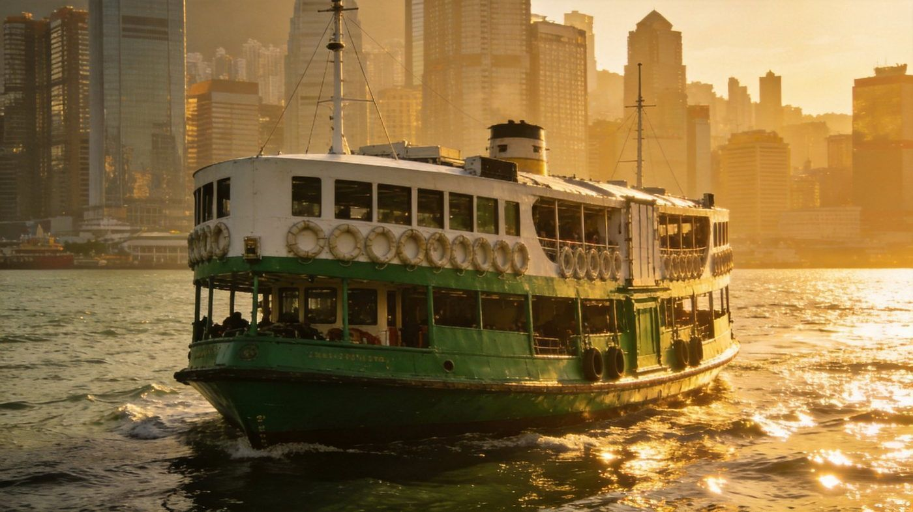
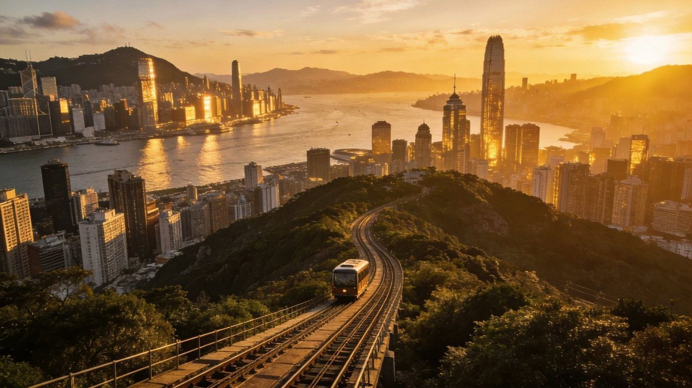
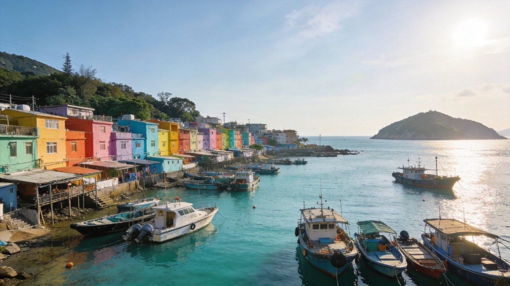
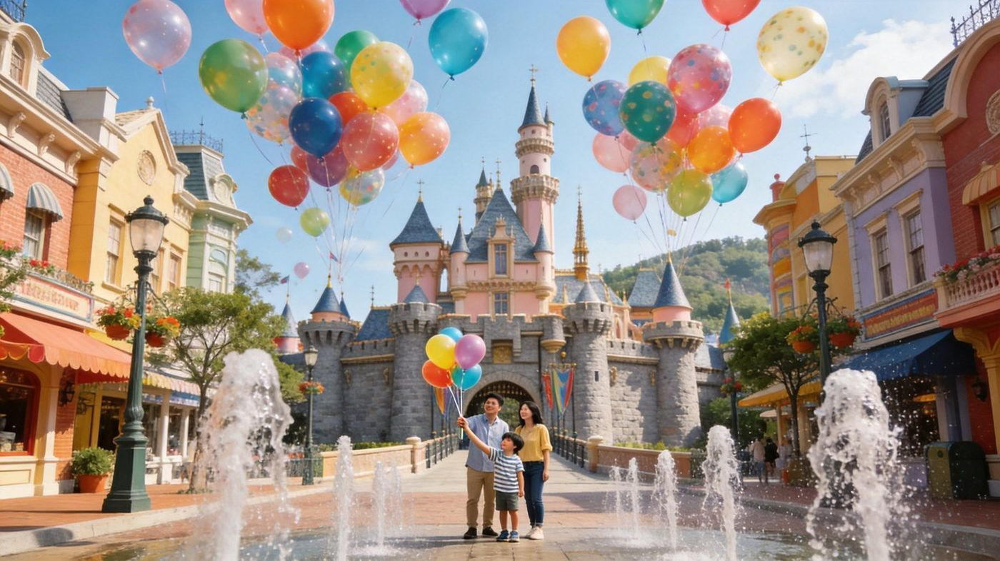

第一次去香港
先弄清"从哪儿玩"和"怎么走"香港分香港岛、九龙半岛、新界和离岛四块，高楼、老城、山海紧密拼接，不同区域的玩法风格截然不同。第一次来，主力覆盖九龙半岛 + 香港岛，再抽半天去离岛拥抱山海。
怎么进香港
签证方便，全国可直飞香港国际机场；京港高铁直达市区的西九龙站，大湾区坐高铁或大巴即达。也适合出境转机时停留。
怎么逛市区
地铁、叮叮车、天星小轮、缆车、落日飞车——用不同的交通工具换不同角度，感受港九 AB 面，一部八达通/旅客全日通搞定。
怎么玩节奏
完全可以周末 Citywalk + 户外徒步，24 小时沉浸式走遍香港：白天山海、夜晚霓虹，热门地标集中，动线很好排。
港片里的复古文艺 · 九龙油尖旺
香港的不夜城 · 街角处处是惊喜旺角港片里的香港记忆
电影里从不缺江湖情仇的地方，烟火气十足、保留许多老旧建筑。女人街、波鞋街、金鱼街、弥敦道物美价廉，走在街头像置身 TVB 港剧。
油麻地老香港的市井腔调
吵闹拥挤却热闹繁华、充满人间烟火的宝藏社区。油麻地警署是半数港剧的取景地，散步到佐敦或旺角，庙街是最负盛名的夜市，帐篷下藏着港式大排档。
尖沙咀摩登现代的聚集地
维港浓缩了这里的精华：360° 无敌海景、两岸高耸楼宇、没有杂质的湛蓝海水。日落时分看一场日落，摩天轮与星光大道打卡，坐天星小轮穿梭港九。



城市里的山海相逢 · 港岛东岸
爬山看城景 · 沿廊看海景坚尼地城路的尽头是海
面朝大海的篮球场围栏是最佳机位，收获一张"海 + 叮叮车 + 游人"的电影画面。上山下山体验媲美重庆的 8D 空间感，再到滨海长廊等一场海岸线日落。
叮叮车复古又时髦的百年电车
花三块钱就能漫游港岛：从西环穿过繁华中环，再到湾仔、铜锣湾。坐上二层透过车窗，怪兽大厦、西营盘、军器厂街，看不同角度的香港。
中环港片的经典时刻
金融商业中心，东西文化交融，官邸教堂法院古迹遍布街巷。穿梭古早后巷与摩登酒吧间，咖啡厅和茶餐厅藏在巷角，累了来杯冻柠乐、一个菠萝油。
太平山顶港岛的城市天际线
香港最高点拥有壮丽天际线。山顶缆车 30 度斜坡攀升，山林往后倒退；登顶遥望山下繁华与海，吹着风望向维港，等一场落日、看香港的灯火。

半小时逃离城市 · 山海与渔村
从繁华市井，到群山沧海寸金寸土的香港有 3/4 是山地绿野、200 多个海岛，只要短短半小时，就能从市井到马尔代夫一样蓝的海。
麦理浩径全球最美徒步路径
全长 100 公里、全程十段，穿山跨海，从山的尽头绵延至海的开端。《二段》是公认最美的山海径，只有徒步才看得见的惊喜。
长洲岛港版小镰仓
人情味的大街小巷、色彩斑斓的怀旧建筑和渔船。吃一块冰冻西瓜喝口汽水，街巷尽头是整片海滩；沿西堤骑行环岛追风，上山看海日落。
大澳渔村港版济州岛 · 最后的渔村
香港最后一个水上渔村，沿水道而建的水上棚屋、纵横交错的水道。傍晚出海看被染成橘色的大海，逛逛海味摊、逗逗路边的猫。

上榜必玩清单
整合另一辑推荐 · 一次列全把游客最爱的"必做清单"一起收进来：从山上海边到地标观景、从出海帆船到市集淘货，香港值得的一站站全在这。
龙脊徒步香港径 · 维多利亚山顶到大浪湾
香港径中景观最开阔的一段，山海一览、绿意满坡，爱爬山就别错过，属于"几分钟就能从城市走到山海"的代表。
天际100360°看全城
全香港视野最好的观景台之一，360°俯瞰维港与城市天际线。网上提前订票，成人约 151 港币。
junk boat 传统帆船出海历史的帆
源自中国的历史性帆船，特有的帆与船身相映成趣，是难得的水上体验，适合包船或跟团夜航看维港。
香港海滩合集阳光与大海出乎意料
别以为香港只有高楼——附近藏着不少漂亮海滩：石澳村海滩、大浪湾海滩、长沙海滩，冲浪踏浪都合适。
杜莎夫人蜡像馆与"名人"合影
和世界各地明星的蜡像"见面"拍照，老少皆宜、气氛轻松，家人朋友都适合的一站。
南莲园 & 志林庵闹市中的一片绿洲
混凝土森林里的一座古典中式园林，湖水亭台、白荷盆景，一旁志林庵是新界佛教中心，安静养眼。
香港历史博物馆读懂香港的来路
规划清晰的大馆，穿过不同展区就能经历塑造香港与港人的各个时代，想懂文化历史很值得走一趟。
漫步当地市场淘货"包罗万象"
旺角波鞋街买运动鞋，庙街 / 女人街 / 猫街(荷李活道)淘货，另有赤柱市场、湾仔街市、服装市场——专精市集各有便宜好物。
一日游路线 + 行前必知
参考 gofunit · 3天2夜自由行框架维港一日游摩天轮 → K11 → 星光大道
香港摩天轮 → K11 MUSEA 逛街 → 星光大道 → 傍晚 幻彩咏香江，一天把维港精华串完。
大屿山一日游昂坪 → 大佛 → 大澳
昂坪360缆车（世界十大缆车）→ 昂坪市集 → 天坛大佛（34米）→ 大澳渔村，山海与渔村一次看。
太平山一日游缆车 → 蜡像馆 → 夜景
山顶缆车登山 → 杜莎夫人蜡像馆 → 山上吃下午茶，等 太平山夜景 华灯初上。
九龙 / 沙田亲子线M+ · 西九 · 史诺比
九龙：M+博物馆 → 西九文化区；沙田带孩子走 史诺比开心世界 / Kiztopia 室内游乐场。
黄大仙庙打小人 · 求个好兆头
本地香火最旺的道观，解签打小人很出名，地铁黄大仙站即到，体验港式信仰文化。
兰桂坊霓虹夜生活
酒吧与夜店聚集地，入夜后最热闹，中环站出口几步路，想感受香港夜生活来这里。
香港海洋公园看海 + 游乐
临海而建的主题乐园，海洋馆、过山车与海滨缆车，亲子进阶之选。
🧳 行前必知小抄
- 最佳季节：每年10-12月秋季最舒适（20-26°C）；夏(6-8月)炎热潮湿多台风、冬(1-2月)偏冷雾多，购物节庆多在冬。
- 插头：香港为220V、英式三孔插座，带转换头；一般3C自带变压基本可直接用。
- 货币：官方货币港币 HKD，建议换 100 / 500 面额纸钞最实用。
- 上网：可提前买香港 eSim/上网卡，落地即用；香港与内地无时差。
- 伴手礼：珍妮曲奇、柠檬王、帝苑酒店蝴蝶酥、黄道益活络油、邹记平安膏。
- 港澳串玩：可从香港坐船/金巴过澳门（见册中澳门篇），交通衔接方便。
顺路尝尝香港味
词里那句"菠萝油与冻柠乐"💡 行前小抄
- 需港澳通行证 + 有效香港签注；最新要求以出入境部门为准。
- 交通买八达通或旅客全日通；机场—市区走机场快线最快。
- 维港"幻彩咏香江"约每晚 8 点；太平山顶傍晚去，城景+夜景一次看。
- 离岛轮渡班次多但末班较早，晚上要回市区留意末班船时间。
- 麦理浩径二段部分路段无补给，带足水、穿防滑鞋，量力而行。
- 旺角、庙街人多注意随身财物；夏天闷热，备防晒与饮水。
🎡 附带 · 带娃可选（参考文未展开）
若同行有小朋友，可在九龙之后加一天 香港迪士尼（离岛/乐园二选一），梦幻城堡、巡游与烟花，亲子氛围直接拉满，行程更完整。
